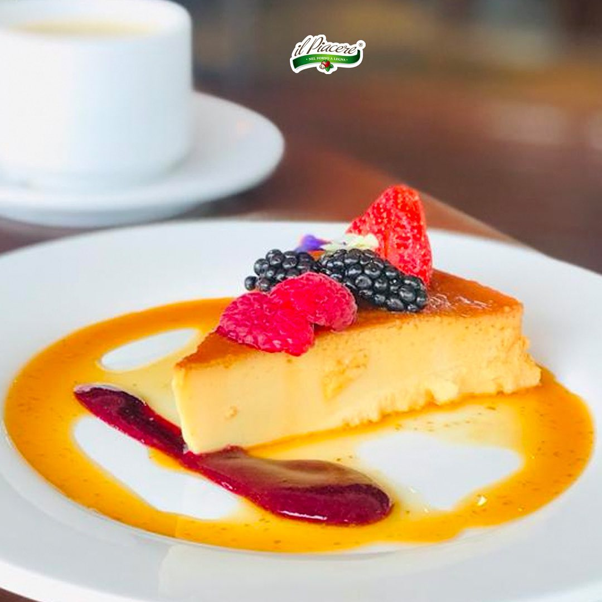

La pizza con piña la amas o la amas. Pide la Hawaiana y devora sus irresistibles ingredientes: mozzarella, piña y doble de jamón de York. Hay una masa perfecta para ti: pan, tradicional, fina o las mas queseras, Cheesy Pops y Rolling pizza. Pídelas online a domicilio o a recoger.

Recomendación del chef
Flan Napolitano
No hay postre más rico y tradicional que la receta de flan napolitano. Es una preparación tan rica que es muy popular en la gastronomía mexicana, el queso crema le aporta una textura cremosa que lo hace delicioso.